Narrated animated shorts
Space stories, explained
Short, narrated animations that walk through two great science fiction sagas, The Expanse and Arthur C. Clarke's Space Odyssey, one part at a time. Made for high schoolers, with captions on every short.
The Expanse
14 shorts · about 44 minutes · watch in order
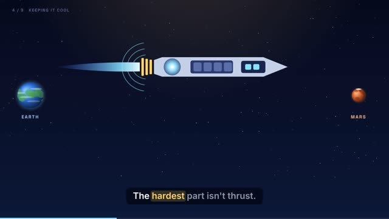
013:45▶Start here
The Epstein Drive
The fusion engine that opens the solar system, and what fast ships would do to travel, society and politics.
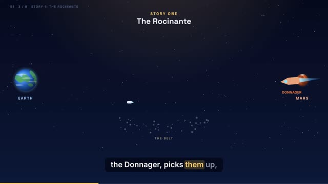
023:22▶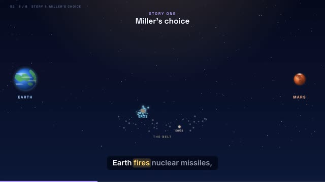
033:23▶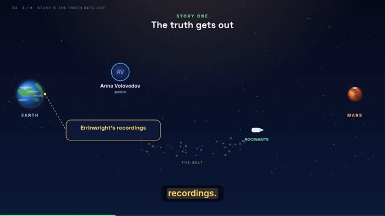
043:24▶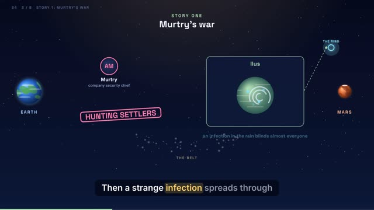
053:30▶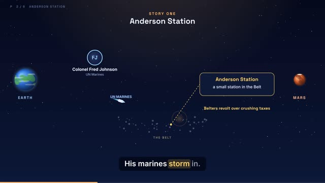
062:15▶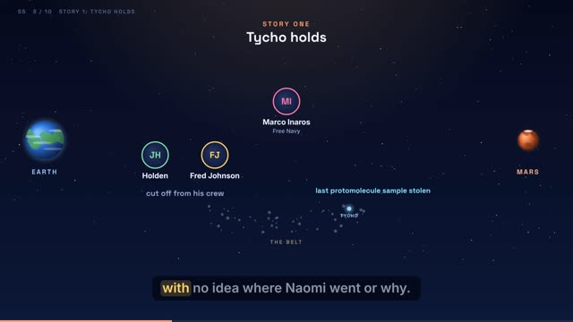
073:50▶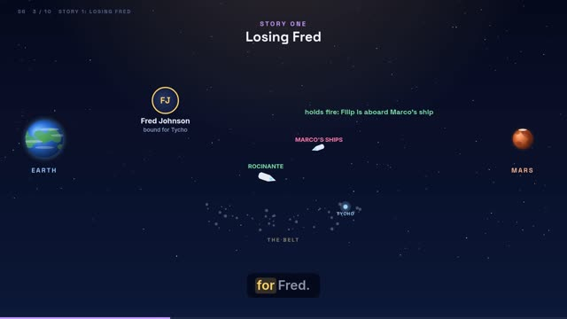
083:39▶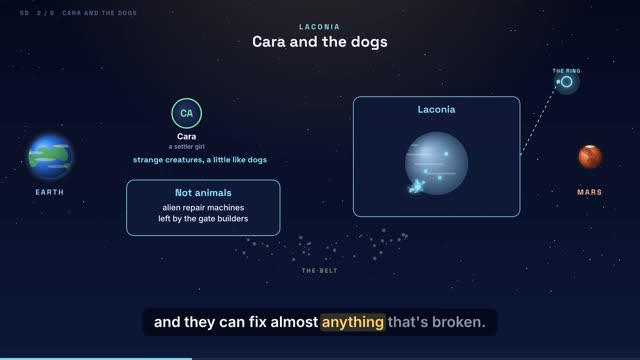
092:13▶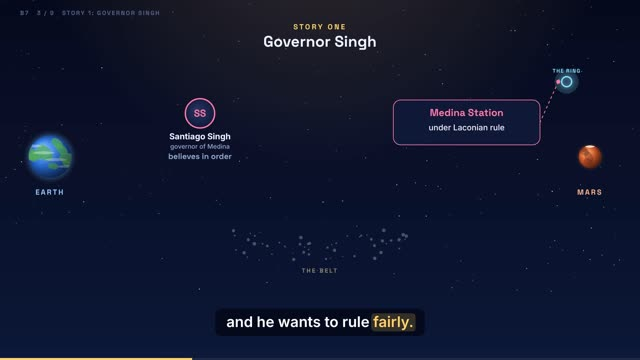
103:12▶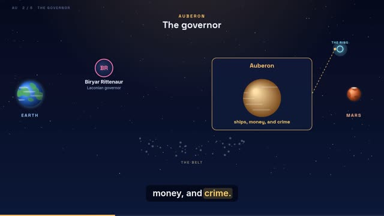
111:45▶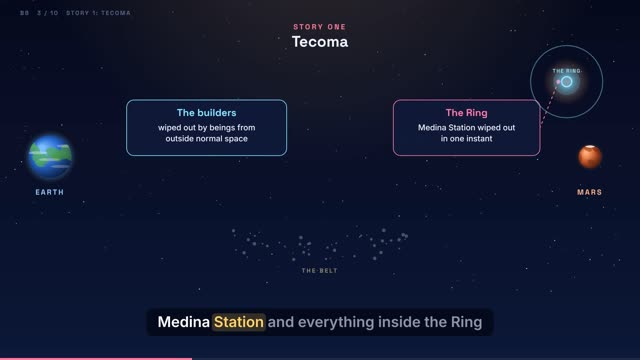
123:52▶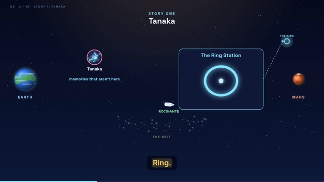
133:43▶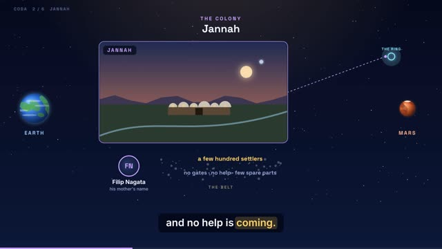
141:57▶
The Space Odyssey
3 shorts · about 13 minutes
How to watch
Press Play to open a short in its own player. Sound starts when you click, and captions highlight each word as it is spoken. Each short is also an MP4 that plays anywhere.
Watch order
The Expanse list runs from the Epstein Drive through the TV seasons and books, with the novellas placed right after the parts that introduce their characters. From Season Four on, the shorts follow the books.
How they were made
Narration by the Kokoro neural voice, visuals drawn frame by frame on a fixed solar-system map so planets keep the same place and size in every scene.